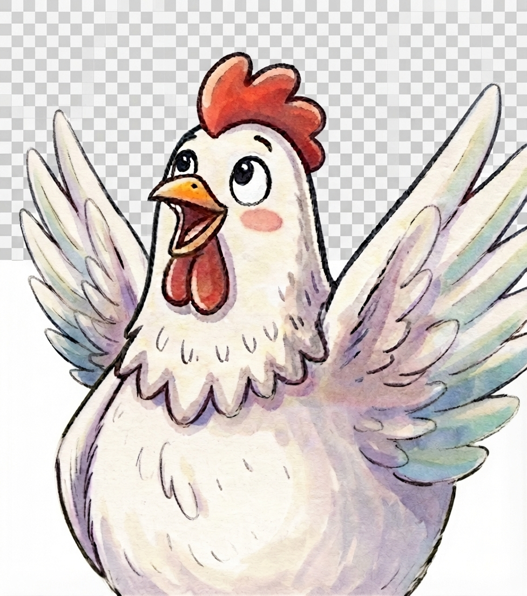

Serafina era apenas uma galinha do sítio. Mas ela acreditou em seu sonho de chegar à Lua. Agora é a sua vez de embarcar nessa missão: vencer as crenças que te limitam e descobrir até onde o seu cérebro pode te levar. 🚀🧠🐔!
Quer treinar o músculo da atenção e da memória de um jeito divertido? Nossos jogos foram criados para ajudar o cérebro das crianças a criar novos caminhos neurais enquanto elas exploram o espaço com a Serafina. As crianças podem explorar o espaço por meio de atividades criativas, brincadeiras e experiências educativas que estimulam a imaginação, a curiosidade e o prazer de aprender. Divirta-se gratuitamente com nossos jogos online e embarque em novas missões ao lado da Serafina!
clique aquiCantar, dançar e se movimentar ajuda o cérebro a liberar substâncias que aumentam a motivação e a alegria de aprender. Baixe as músicas, cante alto e fortaleça as conexões cerebrais que te ajudam a acreditar em você!
clique aquiQue tal construir um foguete igual ao da galinha Serafina? Quando a criança planeja, tenta, erra e tenta de novo, ela está ensinando o cérebro a vencer a crença “eu não consigo”.
clique aquiAdquira o livro “A Incrível Jornada da Galinha Serafina até a Lua” e inspire as crianças a reescreverem suas próprias histórias mentais. Conheça a história completa da galinha que sonhou em chegar à Lua. Adquira o livro "A Incrível Jornada da galinha Serafina até a Lua" na loja online da UiClap.
clique aquiColorir, criar e explorar com atenção plena é um dos melhores treinos para o cérebro em desenvolvimento. Nossos desenhos exclusivos da Serafina ajudam as crianças a praticar foco, paciência e criatividade — habilidades que fortalecem as redes neurais da atenção e da autorregulação. Faça download dos desenhos para colorir divertidos exclusivos que transformam a leitura em uma experiência inesquecível.
clique aquiAssista aos vídeos, músicas e aventuras da Serafina e descubra como histórias, movimento e música ajudam o cérebro a criar novos padrões de pensamento. Acesse nosso canal oficial do YouTube! Inscreva-se e acompanhe as novidades.
Acessar o canal"As atividades do site são incríveis! Meu filho adorou colorir e aprender sobre a Lua!"
Ana Clara
10.09.26
"Minha filha esta amando o site! ela ama pintar com os desenhos da Serafina"
Mãe da Kat
18.09.26
"Meu filho gosta muito dos jogos e dos desenhos para colorir, parabéns pelo site!"
Shirley, mãe do Thomas
05.11.26
Serafina era apenas uma galinha do sítio. Mas ela acreditou em seu sonho de chegar à Lua. Agora é sua vez de embarcar nessa aventura!
Explore atividades exclusivas, construa foguetes, descubra curiosidades sobre o espaço, jogos online, baixe materiais criativos e muito mais, faça parte do Clube dos Astronautas. Porque toda criança carrega dentro de si um sonho capaz de alcançar as estrelas. 🚀🌙🐔